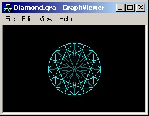
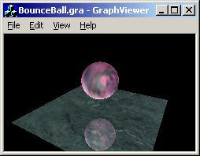
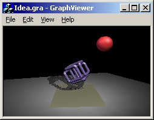
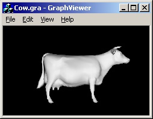
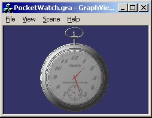
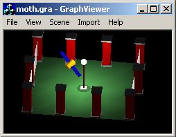

GraphViewer - это приложение предназначеное для просмотра графических файлов записанных в специальном формате (*.gra),
ориентированном на OpenGL.
Были выпущены следующие версии:
10.11.2002 GraphViewer 2.0 - первая публичная версия.
22.03.2003 GraphViewer 3.0 - добавлены кнопки управления положением сцены.
21.06.2003 GraphViewer 3.1 - добавлено сохранение графики в С++ файле.
17.01.2004 GraphViewer 3.2 - для динамических файлов появилась возможность движения вперёд, назад и пауза.
09.04.2005 GraphViewer 3.3 - добавлен импорт STL-файлов. Подробности смотрите здесь.
07.05.2006 GraphViewer 3.4 - добавлен импорт OBJ-файлов. Подробности смотрите здесь.
29.04.2012 GraphViewer 4.0 - добавлены новые gra-команды. Подробности смотрите здесь.
Здесь можно загрузить исходники для VC++ 6.0
или GraphViewer.exe.
Примеры gra-файлов
Для некоторых примеров при помощи кнопок управления можно менять положение объектов
сцены. Также это можно делать мышкой ( левая кнопка мышки отвечает за вращение, а правая -
за перемещения ).
|

|
Diamond.gra - этот пример придумал я сам. Для открытия
достаточно первой версии GraphViewer.
Положение сцены можно менять.
|
|

|
BounceBall.gra - этот пример я взял у
Jan Horn, который в свою очередь
переработал первоначальный вариант принадлежащий
Andreas Gustafsson. Для открытия
достаточно второй версии GraphViewer.
|
|

|
Idea.gra - это немного упрощённый вариант программы "Ideas in motion"
написанной Mark J. Kilgard. Для открытия достаточно первой версии GraphViewer.
|
|

|
Cow.gra - данные были взяты из файла созданного Scott R. Nelson из Sun Microsystems.
Для открытия достаточно второй версии GraphViewer.
Положение сцены можно менять.
|
|

|
PocketWatch.gra - этот пример я тоже взял у
Jan Horn. Очень симпатичные часики.
Ещё и идут. Для открытия достаточно третьей версии GraphViewer.
Положение сцены можно менять.
|
|

|
Moth.gra - этот пример ( "Мотылёк" ) я взял у Robert Doyle
и немного упростил его ( убрал тени и движение сцены ).
Для открытия достаточно четвёртой версии GraphViewer.
Положение сцены и направление движения можно менять.
|